用一个真实角色的一天，验证「知识沉淀 → 转为今日计划 → 执行未完成 → 回顾顺延 → 次日承接」整条闭环。以下截图与字段均来自实际运行的应用和本地存储，不是设计稿或模拟数据。
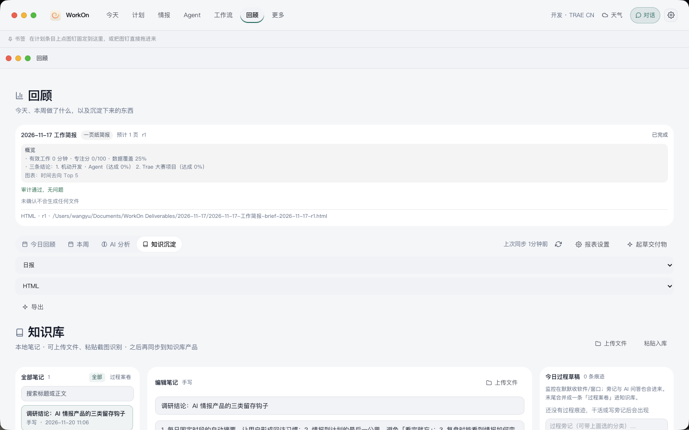
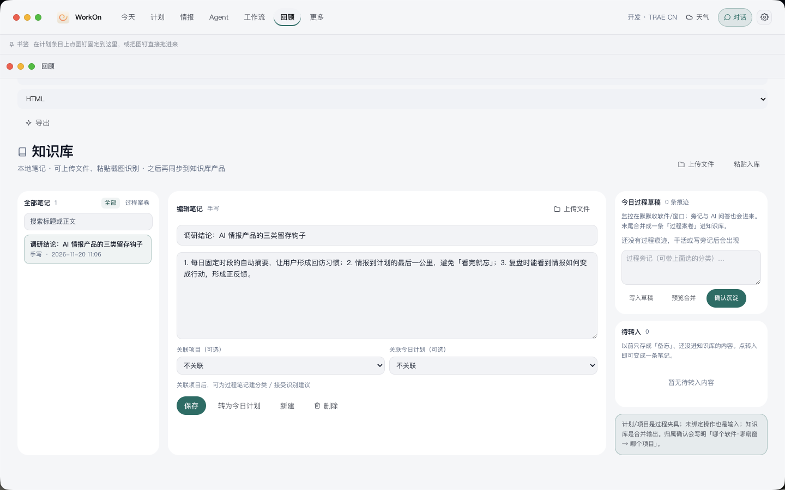
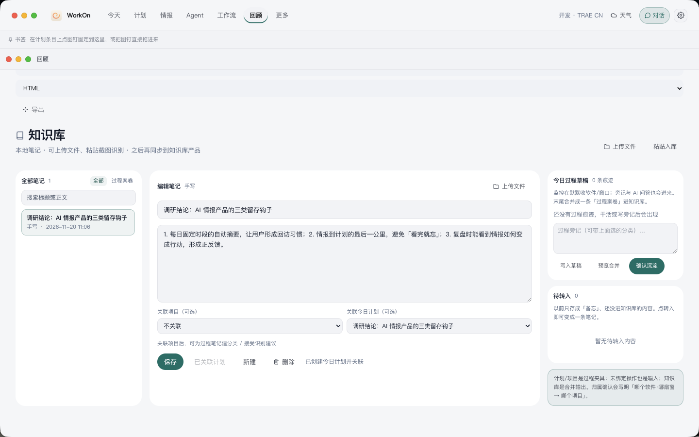
links 已回写，重复点击不会重复建计划。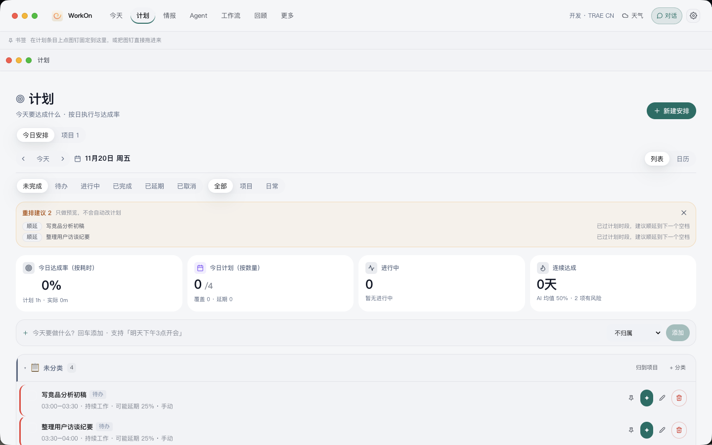
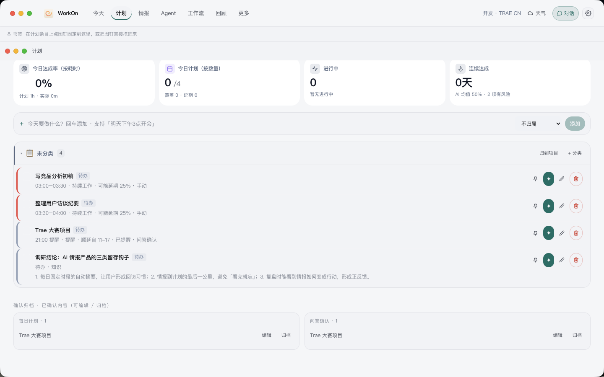
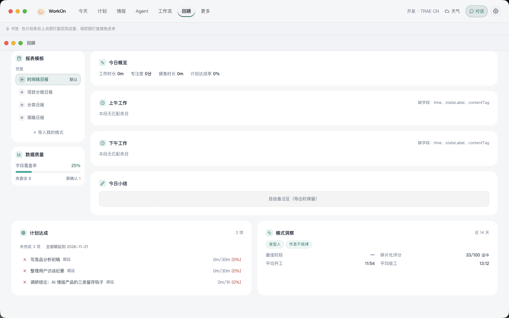
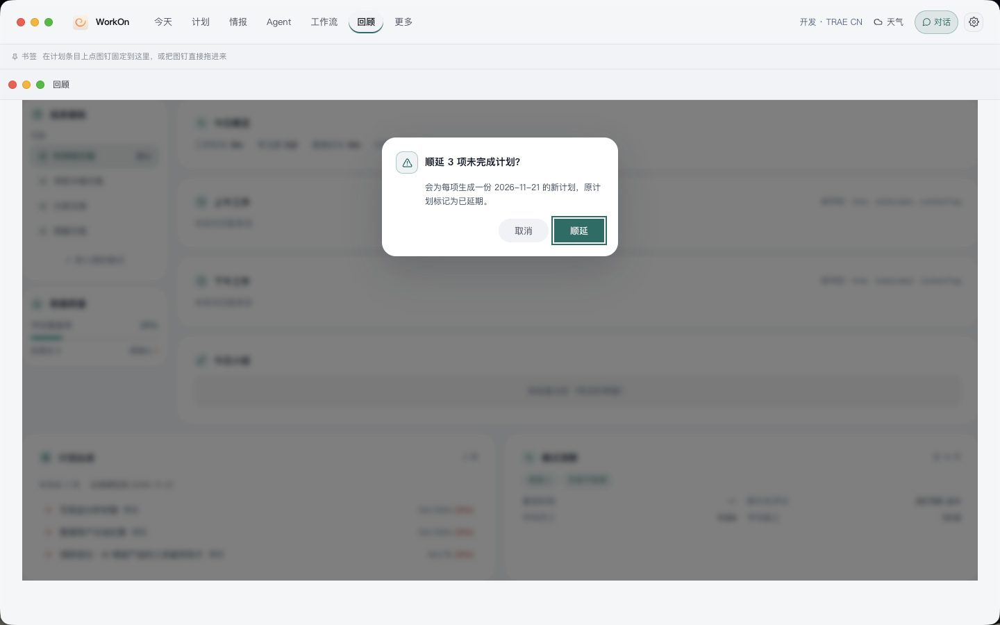
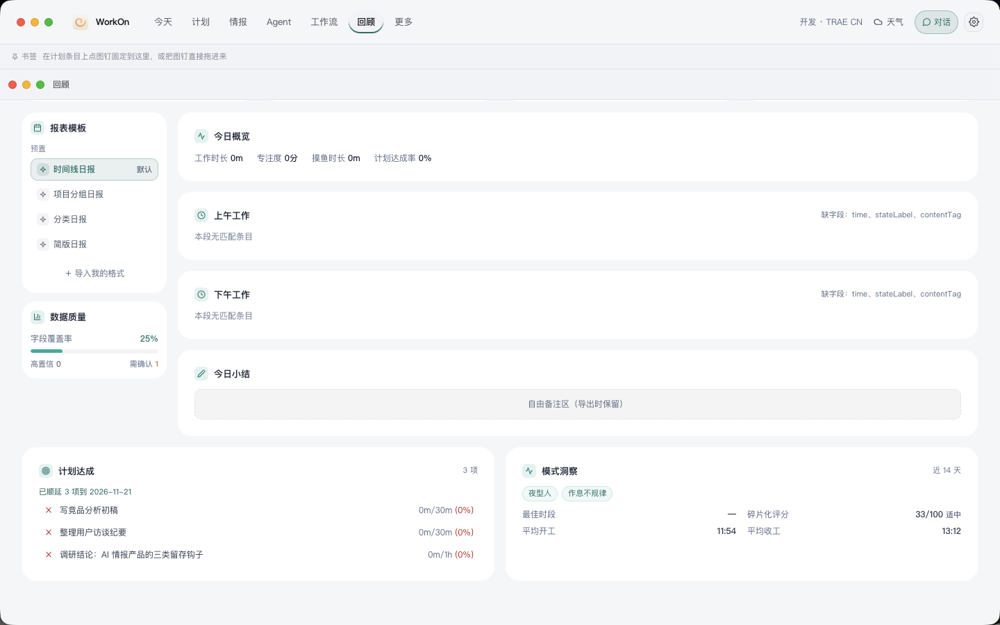
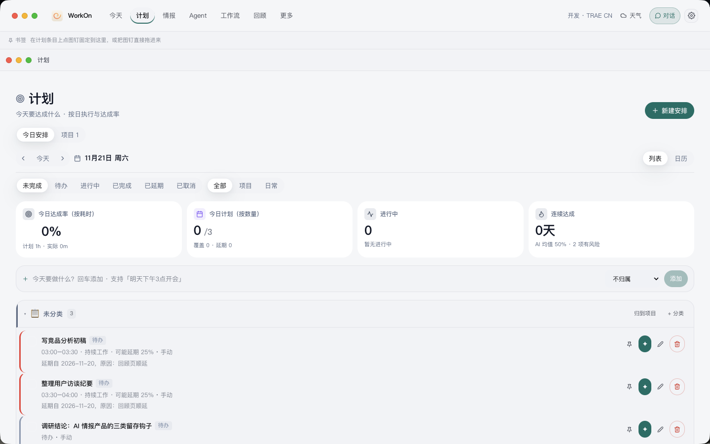
delayed 状态，副本为 planned，并带「延期自 2026-11-20，原因：回顾页顺延」备注。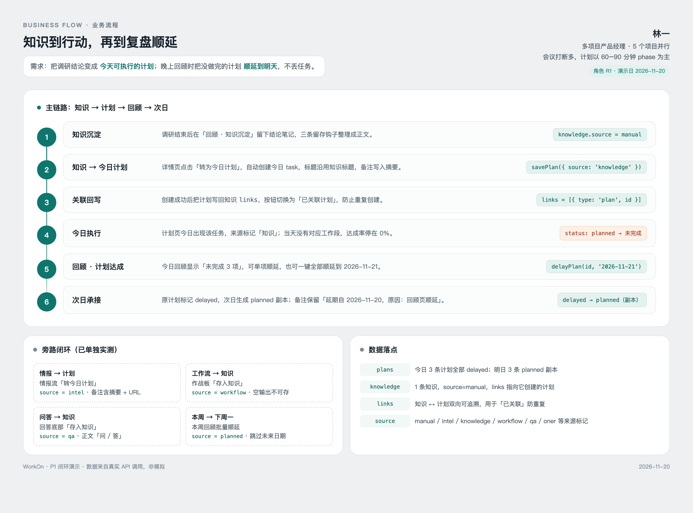
主链路 6 步：知识沉淀 → 知识转计划 → 关联回写 → 今日执行 → 回顾顺延 → 次日承接。下方旁路为已单独实测的
「情报 → 计划」「工作流 → 知识」「问答 → 知识」「本周 → 下周一」，数据落点集中在 plans 与 knowledge。
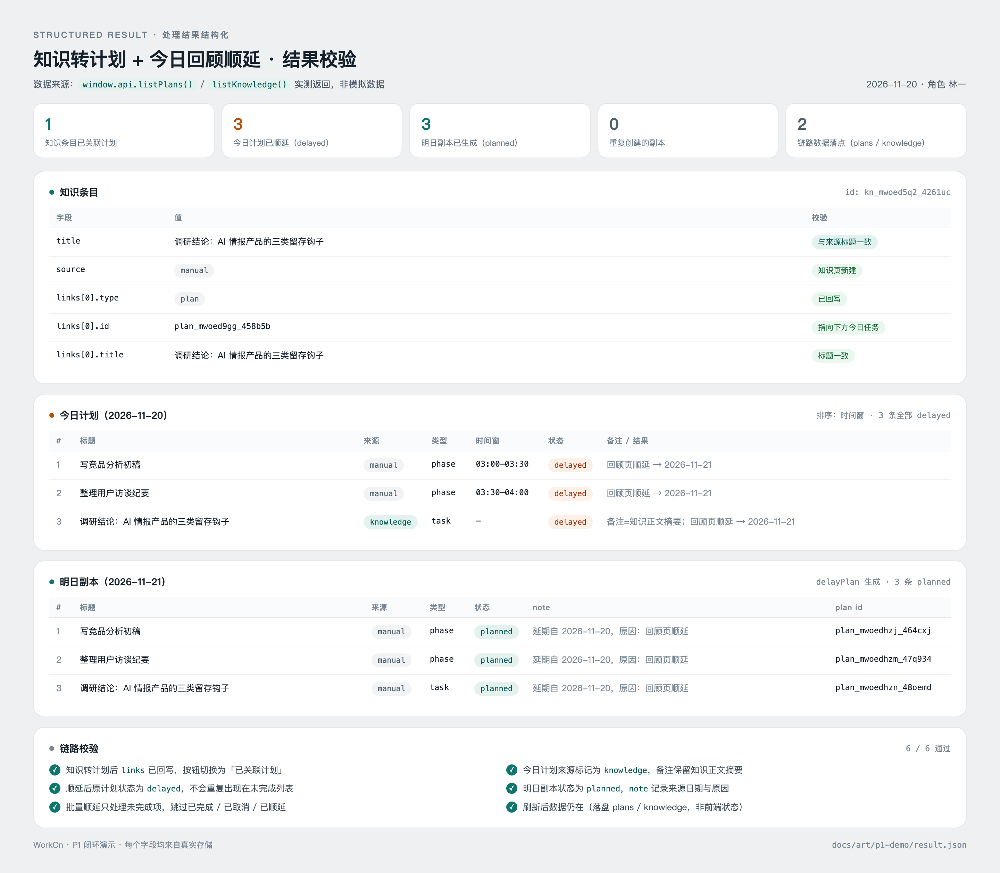
| 对象 | 关键字段 | 结果 |
|---|---|---|
| 知识 | source=manual · links[0]={ type:'plan', id:'plan_mwoed9gg_458b5b' } |
已关联 |
| 今日计划 ×3 | 两条 phase（03:00–04:00）+ 一条 task（来源 knowledge） |
delayed |
| 明日副本 ×3 | status=planned · note=延期自 2026-11-20，原因：回顾页顺延 |
planned |
| 防重复 | 知识按钮「已关联计划」· 已顺延项不再出现在未完成列表 | 0 重复 |
这个角色的一天里，知识不再是静态笔记：它变成今日计划、进入执行、在回顾时被顺延，并以带来源备注的副本出现在第二天。情报、工作流、问答三条旁路也已用同样口径实测，统一落到「知识 → 计划」这条主干上。